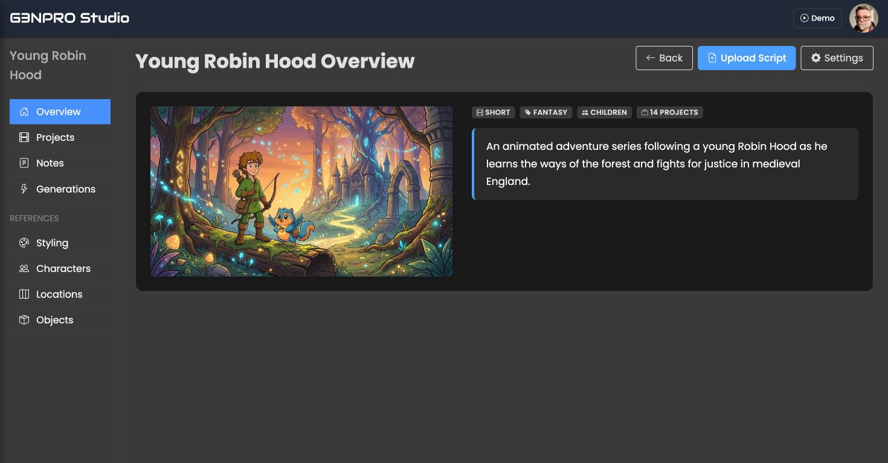
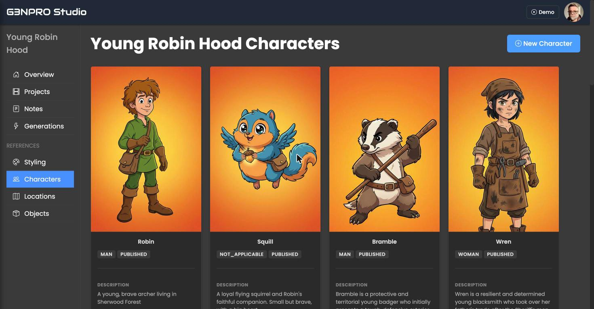
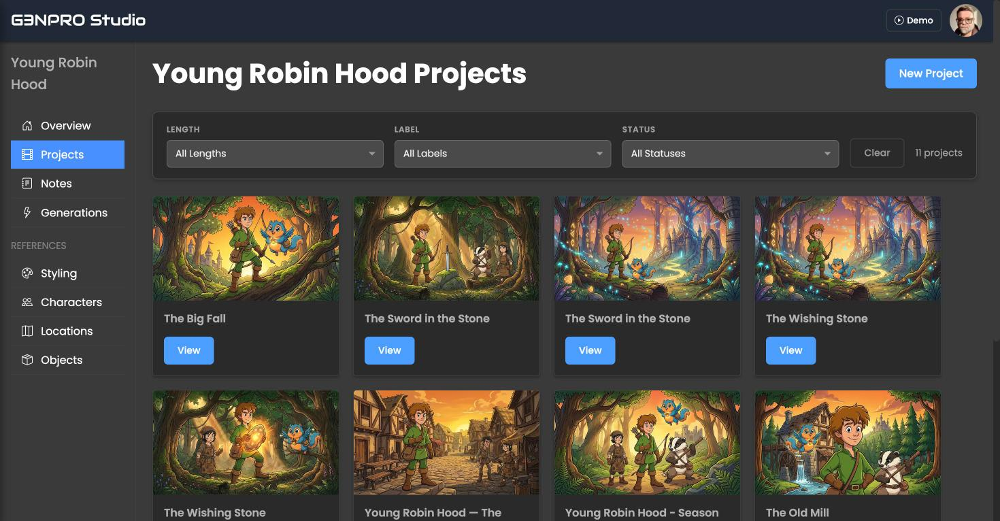
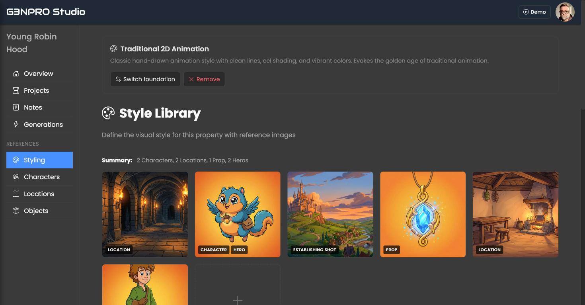
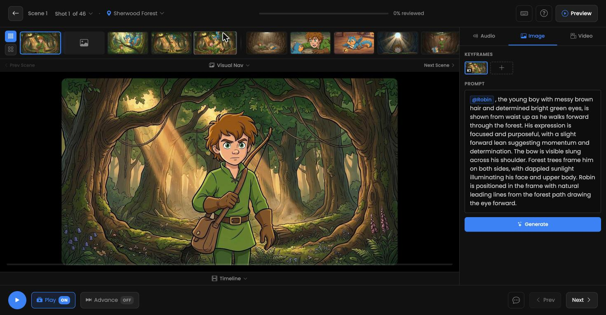
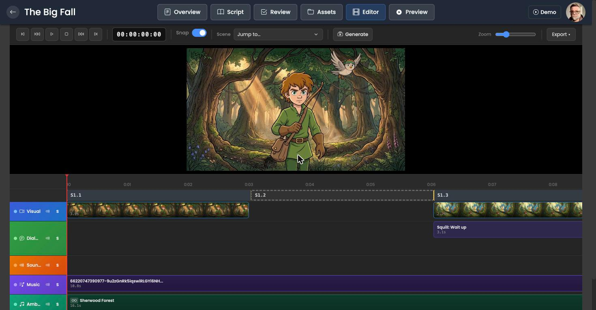

The shape of the system
The domain model mirrors real production: a Property (a show or film) holds Projects (individual episodes or shorts), each Project holds a Script parsed into Scenes, and each Scene breaks down into Shots with composition, camera movement and duration. Every generated image, video and audio file is a tracked MediaAsset attached to the thing it serves. The screenshots throughout this page come from Young Robin Hood, an original animated property developed inside the platform.

Agentic workflows
The centerpiece is the Director Agent, a Claude-powered cinematography system. Given a script, it breaks scenes into dramatic beats, plans coverage, chooses shot types and angles, and writes detailed visual prompts in cinematic language. It works in two modes: autonomously, generating a full shot list for a scene, and interactively, recommending or refining shots in response to a person's notes.
Every exchange with the model runs through structured schemas rather than free text. Scene analysis, shot batches, refinements and prompt enhancements each have a defined shape, so the agent's output lands directly in the database as scenes and shots instead of prose that a human must transcribe. The same discipline applies in the other direction: an in-app agent operates the platform through a small set of typed tools, including generate_shot, search_characters and navigate_to_property, so agent actions go through the same code paths as human ones.
Supporting agents handle enrichment. When a script mentions a new character or location, enrichment services draft descriptions and visual references that a person can accept, edit or discard. Background jobs follow one rule: they only update models. The interface listens and redraws itself, which keeps the agent code simple and the UI honest about what is actually in the database.


A generation pipeline that refuses to marry a provider
Generative models change monthly, so the pipeline is built to survive its providers. Three layers make that work.
Purposes. Every generative request is classified by purpose, from character_portrait to shot_video_lip_sync to music_score. The purpose manifest currently defines 45 of them across image, video, audio and text. A purpose captures what the production needs; it says nothing about which model produces it. That separation is what lets the platform swap models under a workflow without touching the workflow itself.
Adapters. A factory maps each request to one of more than a dozen provider adapters behind a common interface: Runware, Kling, Runway, fal.ai, BytePlus, ElevenLabs, Tripo3D, and self-hosted ComfyUI execution on Modal among them. New model, new adapter, same pipeline.
Strategy resolution. Before anything generates, a resolver inspects what assets the subject already has and cascades to the best available technique: a trained LoRA for identity if the character has one, reference-image conditioning if there are references, plain text-to-generation as the floor, and hybrid modes that combine a LoRA for identity with references for style. Consistency is enforced by the data on file rather than by prompt wording.
Underneath all of it sits a model asset registry that tracks multi-gigabyte model files by content hash across environments (local disk, Modal volumes, S3), plus tooling that parses ComfyUI workflow graphs, extracts their model and extension dependencies, and validates a deployment before it runs. Characters get their own finetuned LoRAs, trained from captioned image sets managed inside the platform.

An interface built for judgment at speed
A platform that generates hundreds of assets per episode lives or dies on how quickly a person can review them. The UX work concentrates there.
The whole interface updates through morph-based page refreshes: when a background job finishes a render, the page redraws in place while preserving scroll position, form state and anything the user is mid-editing. Nobody refreshes to see if a shot is done. The review screen presents one shot at a time with its prompt, keyframes and generated frame, and keyboard-driven controls to approve, regenerate or edit. Prompts use @mentions that bind directly to characters and locations, so "@Robin" in a prompt is a reference to the character record, his references and his LoRA rather than a hopeful string.

Approved shots flow into a timeline editor with tracks for visuals, dialogue, sound effects, music and ambience, scene markers, snapping and export. For teams with an existing finishing workflow, a DaVinci Resolve plugin connects through a device-authorization flow and a dedicated API, so the platform meets editors inside the tool they already trust.

What the architecture is really for
Each piece answers the same question from a different angle: where does the machine end and the person begin? Agents plan and draft through schemas so their work arrives structured and reviewable. The pipeline resolves strategy from real assets so consistency is enforced by data. The interface makes human judgment the fastest step in the system instead of the slowest. The result is a production process where a small team can carry a property like Young Robin Hood from a script to a reviewed, assembled cut, and where every frame that ships was approved by a person who could see exactly what they were approving.
G3NPRO has animation studio customers. Screenshots show Young Robin Hood, an original property developed in the platform. Generation runs across commercial APIs and self-hosted ComfyUI on Modal.